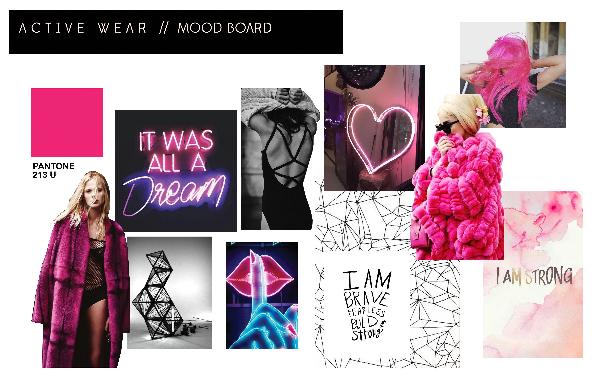

Active Wear
Inspired by the bold lines in neon signs. These active wear designs are made for the strong girl who is confident and fun. Designed with attention to high contrast lines, geometric shapes, and bright pops of pink. The convertible jacket is specifically designed for those early morning runners who may need a little extra warmth. It can be worn either down, or up around the neck like a scarf.
